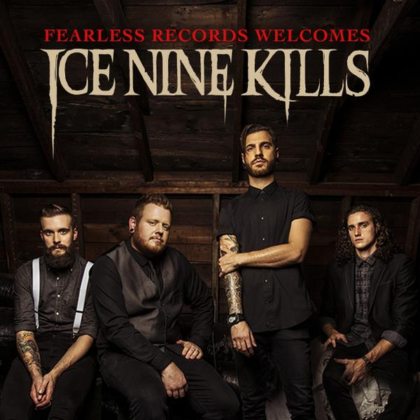

2002-2009: Creación y "Last Chance to Make Amends
Los amigos de instituto Spencer Charnas y Jeremy Schwartz formaron Ice Nine Kills, originalmente con el nombre de Ice Nine, pero cambiaron el nombre a su actual Ice Nine Kills justo antes de lanzar su álbum debut independiente Last Chance to Make Amends el 20 de abril de 2006.
Al año siguiente, el 20 de noviembre de 2007, Ice Nine Kills lanzó su primer EP The Burning con Red Blue Records, tras lo que se fueron de gira nacional para promocionarlo, siendo teloneros de artistas como I See Stars y Eyes Set to Kill, entre otros. Apenas comenzado el 2008, el grupo ya había sido invitado para ser telonero también de otros artistas de más renombre, como As I Lay Dying (banda), A Day to Remember, Thursday, Paramore, así como para dar un único concierto en el tour de Taste of Chaos de 2009. Este mismo año, Ice Nine Kills sacó dos canciones acústicas ("The Simple Act of Giving Up" y "Lifetime in a Week") en un EP titulado 2 Song Acoustic.
A mediados de 2009, Schwartz decidió dejar el grupo (alegando no conseguir adaptarse a la vida en la carretera mientras estaban de giras), dejando a Charnas como único miembro fundador en el grupo. Charnas reclutó a miembros de la recién disuelta banda de post-hardcore Remember Tomorrow (de Rochester, NY). Este cambio en la alineación del grupo cambió el sonido original de Ice Nine Kills, volviéndolo metalcore experimental, lo que captó la atención de Ferret Music, que los contrató en la primavera de 2009. Tras su aparición del grupo en Warped Tour en 2009, el grupo comenzó a escribir y a grabar su siguiente disco.
2010-2013: "Safe is Just a Shadow" y "The Predator"
Ice Nine Kills lanzó su segundo disco de estudio, Safe Is Just a Shadow, el 12 de julio de 2010. El entonces cantante del grupo Dave Sieling (quien dejó Ice Nine Kills este mismo año) contribuyó a las "voces limpias" del álbum junto con Spencer Charnas. Este disco recibió el halago de la revista de Heavy Metal Revolver, tras lo que el grupo fue invitado a asistir a los Revolver Golden Gods awards (premios dioses dorados) en Los Ángeles, CA, el 20 de abril de 2010. Ice Nine Kills promocionó Safe Is Just a Shadow durante dos semanas en el Warped Tour 2010, y como teloneros de Taproot, grupo Nu Metal de Míchigan. El grupo hizo su primera gira nacional en el verano de 2011, y actuó en una única cita del Warped Tour 2011, en Darien Lake (NY) en el escenario Dzambo. Ice Nine Kills lanzó el 20 de junio de este año el videoclip de su canción "The People Under the Stairs", inspirado en la película Inglourious Basterds. Este mismo día el grupo anunció su nuevo contrato con Outerloop Management, discografía que por entonces representaba también a We Came as Romans, Refused, y Periphery.
2014-2015: The Predator Becomes the Prey
El 8 de enero del 2014 Ice Nine Kills lanzó un segundo sencillo titulado "The Power in Belief". El nuevo disco, titulado The Predator Becomes the Prey, salió a la venta el 21 de enero a través de la discográfica Outerloop Records, perteneciente a Fearless Records. Este álbum consiguió que Ice Nine Kills entrase por primera vez en la lista de éxitos Billboard Top 200, alcanzando el puesto #153. The Predator Becomes the Prey también debutó en el puesto número #3 en la lista de éxitos Heatseeker, número #38 en la lista de discógraficas indepenientes, y número #13 en la lista de éxitos de Hard Rock.
2015-2018: Contrato con Fearless Records, Every Trick in the Book, y el re-lanzamiento de Safe is Just a Shadow
El 17 de septiembre de 2015 Ice Nine Kills anunció su contrato con Fearless Records, bajo el cual lanzarían su nuevo álbum Every Trick in the Book. El 25 de este mismo mes el grupo sacó su nuevo sencillo "Bloodbath & Beyond" junto con el vídeo de la letra. Un mes más tarde, el 22 de octubre, se publicó el videoclip oficial de la canción "Communion of the Cursed".
Ice Nine Kills lideró la gira Fresh Faces Tour desde el 24 de octubre al 29 de noviembre, con el apoyo de otros grupos de la discográfica Fearless Records como Wage War y The White Noise.
El 1 de diciembre de 2015 Ice Nine Kills publicó el resto de canciones del nuevo álbum Every Trick in the Book a Youtube, saliendo el disco a la venta tres días más tarde, el 4 de diciembre.
2018-2019: The Silver Scream, salida de Connor, Justin y JD
El 14 de junio de 2018, el baterista Conor Sullivan anunció que dejaba la banda para dedicarse a diferentes proyectos musicales. El exbaterista de Affiance, Patrick Galante servirá como miembro de gira.
El 20 de junio de 2018, Ice Nine Kills lanzó "The American Nightmare", el primer sencillo de su próximo álbum The Silver Scream. Fue acompañado por un video musical inspirado en la película A Nightmare on Elm Street. The Silver Scream fue lanzado el 5 de octubre de 2018 y marcó el debut más alto de la banda hasta la fecha. El álbum vendiendo casi 19,000 copias en su primera semana, logrando que la banda obtuviera su primer récord de los 10 primeros en la lista de álbumes principales de Billboard. Cuenta con trece canciones inspiradas en trece películas de terror separadas.
Además de "The American Nightmare", los sencillos que han sacado de este álbum son: "Thank God Is Friday" basada en las películas de Viernes 13 (franquicia) el 13 de julio de 2018, "A Grave Mistake" basada en la película de The Crow (película de 1994) el 21 de septiembre de 2018, "Stabbing In The Dark" basada en la saga de películas de Halloween (saga) el 19 de octubre de 2018, "Merry Axe-Mas" basada en la saga de películas de Silent Night, Deadly Night el 21 de diciembre de 2018 y "IT Is The End" basada en la película de It (película de 2017) el 24 de septiembre de 2019.
Los videos musicales de los sencillos cuentan una historia, donde Spencer Charnas, interpretandose a sí mismo, va al psicólogo tras unos sueños extraños donde asesinaba gente, con el paso del tiempo el Dr. Black (El psicólogo) empieza a sospechar que Spencer de verdad esta asesinando gente, ya que en la vida real, hay asesinatos de la misma manera que ocurren en su sueño, en el video musical de la canción "Merry Axe-Mas" se nos muestra el pasado de Spencer en esta historia; el final de la historia se da con el video de la canción "IT Is The End" donde Spencer se revela como el asesino, y le explica al Dr. Black que hace esto, ya que en el pasado, él por negligencia dejó libre a un psicópata que asesina a la familia de Spencer, tras esto, Spencer, asesina al Dr. Black y lo culpa de todas las muertes.
En una entrevista con Wall of Sound el 24 de septiembre de 2018, Spencer Charnas reveló que la banda colaboró con Less Than Jake en la canción "IT is the end", que se basa en la película IT. Less Than Jake proporcionó la sección de instrumentos de metal de la canción para darle un "ambiente siniestro, de carnaval, de circo". El álbum también incluye una canción llamada "Rocking the Boat", en la que la banda nombraba todos sus lanzamientos anteriores y el excantante Jeremy Schwartz hace una aparición especial.
2019-2020: The Silver Scream: The Final Cut
Tras el éxito de su último álbum, la banda decidió hacer una versión extendida de este bajo el nombre de The Final Cut haciendo referencia a las películas que sacan versiones extendidas o cortes de director. Esta nueva versión, aparte de incluir la versión original del disco junto con una nueva canción, un cover, una versión en vivo de una canción del álbum y 3 versiones acústicas de canciones del álbum original. La nueva canción se titula "Your Number's Up" que esta basada en la película de los 90's Scream, la banda sacó un vídeo lyrics de este álbum. La versión es de la famosa canción de Michael Jackson, Thriller. La canción en vivo fue “A Grave Mistake”, y las versiones acústicas fueron “Savages”, “Thank God It's Friday” junto a Ari Lehman, actor del personaje Jason en la primera película de “Viernes 13”, y “Stabbing In The Dark” junto a Matt Heafy cantante de Trivium.
2021-presente: The Silver Scream 2: Welcome to Horrorwood
Al adelantar su nuevo sencillo "Hip To Be Scared", que está inspirado en el thriller clásico de culto American Psycho, el título del nuevo álbum de Ice Nine Kills aparece en los créditos como The Silver Scream 2: Welcome to Horrorwood. El álbum se lanzó el 15 de octubre de 2021.
El sencillo, que presenta al líder de Papa Roach, Jacoby Shaddix, fue lanzado el 9 de julio, junto con un video musical que lo acompaña.
El 3 de agosto de 2021, la banda lanzó un video teaser con la lista de canciones del nuevo álbum, lo que llevó a los fanáticos a predecir y especular sobre las películas de terror/suspenso que inspiraron las canciones del álbum.
La banda comenzó a lanzar videos musicales previos al lanzamiento del álbum el 9 de julio con "Hip to Be Scared". El video inició una historia para el álbum que continuó el 9 de agosto con "Assault & Batteries", que está inspirado en la película Child's Play original. El último sencillo que se lanzó fue «Funeral Derangements», que se basó en el superventas de Stephen King, Pet Sematary. Cuenta con el actor original de Gage Creed, Miko Hughes, quien esta vez interpreta al camionero.